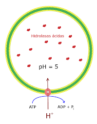

Els lisosomes
Els lisosomes són vesícules membranoses que contenen enzims digestius. S’utilitzen per a la digestió intracel·lulars de partícules exògenes, orgànuls, proteïnes del citosol...Alguns es transporten a fora per a fer una digestió extracel·lular.
- Contenen fosfatasa àcida, lipasa i peptidases, entre més de 40 enzims diferents.
- Es formen en la cara trans de l’Aparell de Golgi.
La seva membrana:
- Té les proteïnes de la cara interna molt glicosil.lades ( amb molts sucres) per a evitar que els seus propis enzims l’ataquin.
- Té una bomba de protons per bombejar hidrogenions a l’interior i mantenir el pH.
- Té unes proteïnes de transport que li permet la sortida dels productes resultats de la digestió

Es poden distingir dos grups de lisosomes:
- Lisosomes primaris: contenen els enzims a l’interior o bé els transporten fora per a la digestió
extracel·lular com per exemple l’acrosoma de l'espermatozou o els lisosomes dels osteoclasts per a la
destrucció de la matriu òssia - Lisosomes secundaris: Contenen material del procés de digestió, enzims, substrats i productes de d'hidròlisi. Es
forma per la unió de un lisosoma primari amb una vacuola fagocítica.